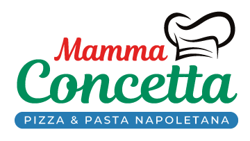
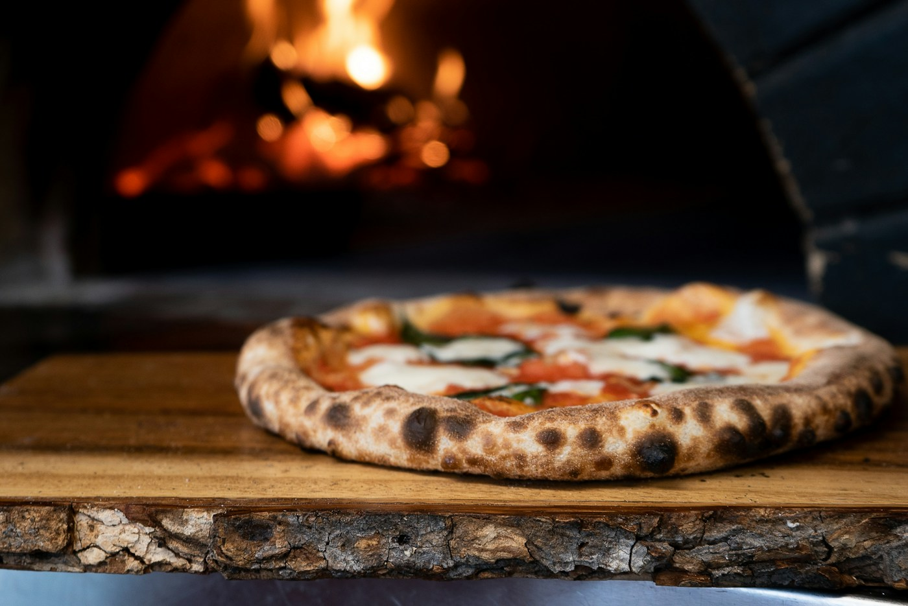

O SABOR QUE APROXIMA
Pizza napoletana
A Margherita Verace é apresentada pela casa como seu carro-chefe. Descubra também as outras opções no cardápio.
Ver pizzas no menu
Pedir deliveryPIZZA & PASTA NAPOLETANA · TATUAPÉ
Uma pizza de borda leve. Uma massa feita com cuidado. Um bom motivo para deixar a pressa lá fora.

DA TRADIÇÃO À SUA MESA
A Mamma Concetta nasceu em 2016, trazendo a inspiração napolitana para o Tatuapé.
O preparo das pizzas leva farinha italiana e fermentação de pelo menos 48 horas. Na finalização, o forno napolitano dá forma às bordas altas e aeradas que fazem parte dessa tradição.
Além das pizzas, a casa apresenta massas artesanais, entradas e sobremesas. Um convite para escolher com calma e aproveitar a companhia.
Conhecer a história da casaCADA VONTADE TEM SEU MOMENTO
Explore o menu oficial para conferir opções, ingredientes e valores atualizados.
O SABOR QUE APROXIMA
A Margherita Verace é apresentada pela casa como seu carro-chefe. Descubra também as outras opções no cardápio.
Ver pizzas no menu
PARA COMER SEM PRESSA
Uma outra forma de conhecer a cozinha da Mamma Concetta. Consulte os preparos disponíveis no menu oficial.
Conhecer as massasFotografias ilustrativas de banco de imagens. A versão aprovada poderá usar fotos próprias dos pratos e do ambiente. Menu e delivery abrem nos canais da Saipos já divulgados pelo restaurante.
BOA COMIDA PEDE BOA COMPANHIA
Comece sua visita por aqui.
Preencha sua preferência e leve os detalhes organizados para a conversa com a equipe no WhatsApp.
Este formulário prepara uma solicitação. Não consulta disponibilidade nem garante reserva. O restaurante confirma data, horário e condições pelo atendimento.
UM ENCONTRO NO TATUAPÉ
Rua Professor Pedreira de Freitas, 629
Tatuapé · São Paulo, SP
Telefone: (11) 2609-1069
WhatsApp: (11) 96695-0123
Confira horários, programação e condições diretamente com a equipe antes de sair.
Traçar rotaA MAMMA TAMBÉM VAI ATÉ VOCÊ
Consulte o endereço atendido, o cardápio, as taxas e os prazos no delivery oficial.
Abrir delivery